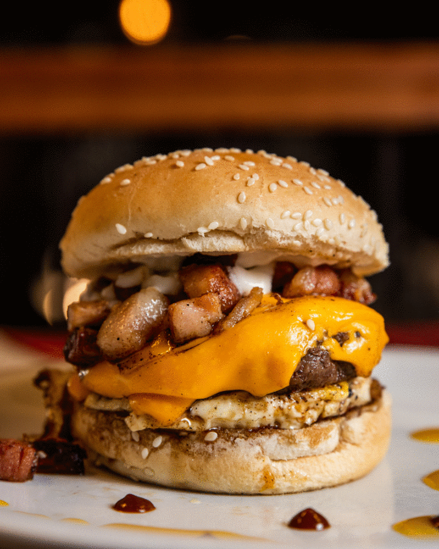
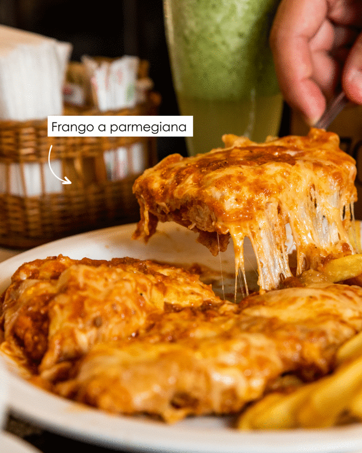
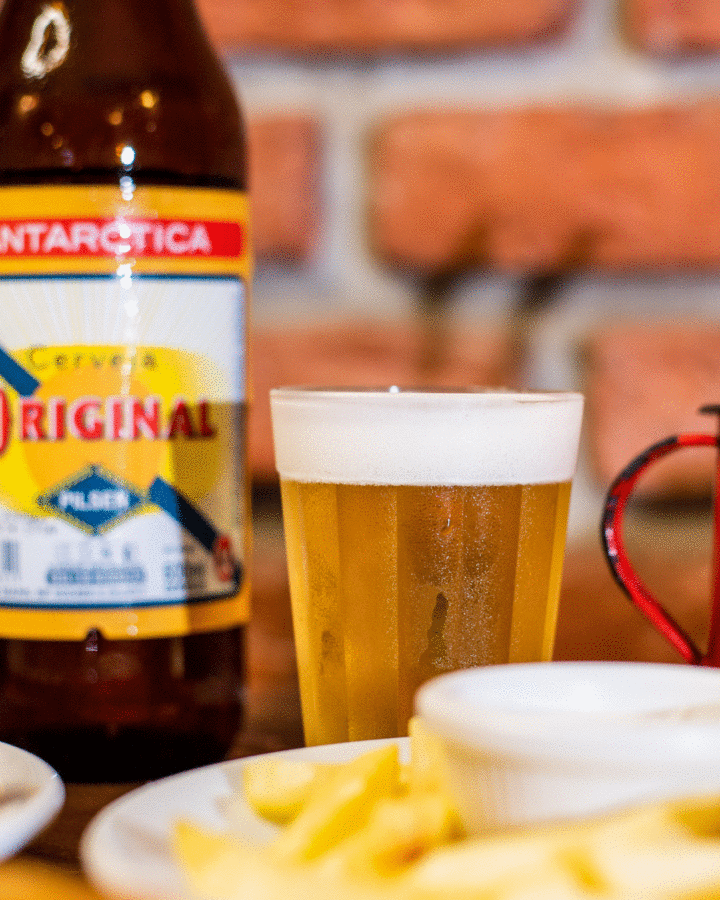
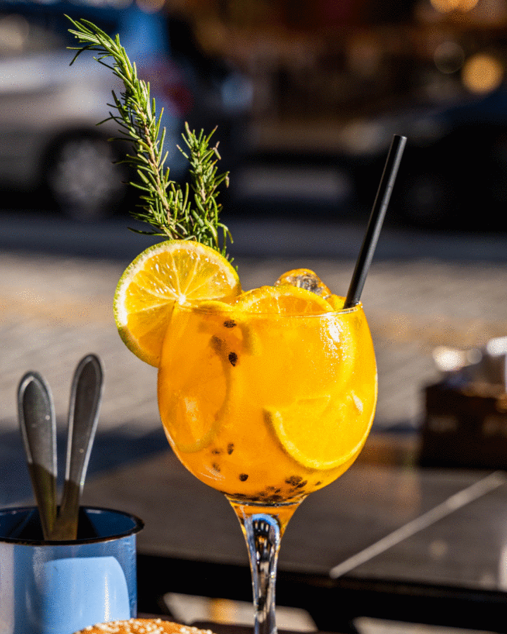
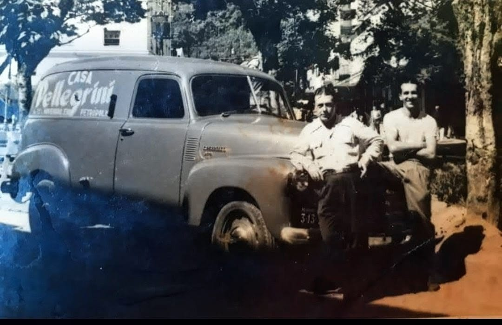
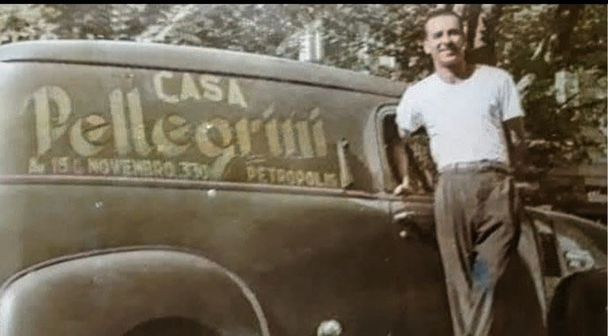

Tradição de restaurante familiar com energia de bar. Pioneiros no hambúrguer artesanal, no chopp e cerveja estupidamente gelados.
Confira as estrelas do nosso cardápio (temos muito mais no menu completo!)

Nosso Suculento Burguer Artesanal de 125g com Queijo Cheddar Derretido, Ovo, Bacon em Cubos e Nosso Famoso Molho de Alho.

O prato campeão do nosso almoço executivo. Crocante, suculento e coberto com muito queijo derretido.

Acompanhe nossos petiscos da serra ou nossos deliciosos caldos com uma Antarctica Original trincando.

Ambiente perfeito merece brindes perfeitos. Aproveite nossos drinks elaborados para o seu happy hour.
Acompanhe o seu time do coração ou as melhores lutas aqui! Temos 8 televisões espalhadas pela casa para você não perder nenhum lance, sempre acompanhado da cerveja e do chopp mais gelados da região.


A história da Casa Pellegrini começou há mais de um século. Em 1887, o imigrante italiano Luiz Pellegrini (Vito Luigi) desembarcou no Brasil vindo de Polignano a Mare e encontrou em Petrópolis o seu novo lar.
Sempre trabalhando no ramo da gastronomia, a família marcou época. O clássico carro de entregas da Casa Pellegrini, com sua buzina inconfundível, tornou-se parte da memória afetiva da cidade, percorrendo as ruas de uma Petrópolis ainda em crescimento e levando sabor aos petropolitanos.
Muitas décadas depois, em 2015, os bisnetos resgataram essa herança e paixão culinária para fundar o atual restaurante na Rua 13 de Maio, prestando uma verdadeira homenagem aos seus antepassados.
Hoje, a Casa Pellegrini é um dos restaurantes mais tradicionais de Petrópolis e pioneira em hambúrguer artesanal na cidade. Unimos essa rica tradição familiar com a energia de um bar vibrante. Seja para o almoço executivo, um encontro especial (date) ou para curtir com os amigos acompanhado do chopp e cerveja mais gelados da região.
Estamos localizados no coração de Petrópolis.
Endereço:
R. Treze de Maio, 184
Centro, Petrópolis - RJ
CEP: 25685-231
Horário:
Todos os dias, das 07:30 à 00:30.
Aberto quase o ano todo.
Contato: (24) 2231-6110